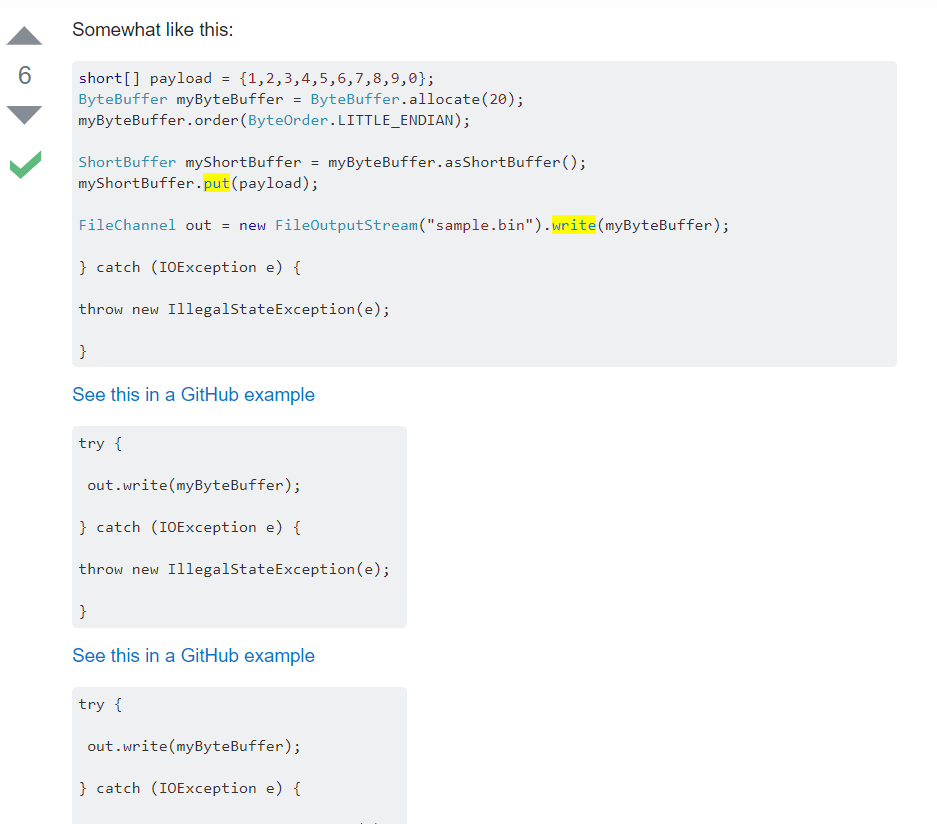
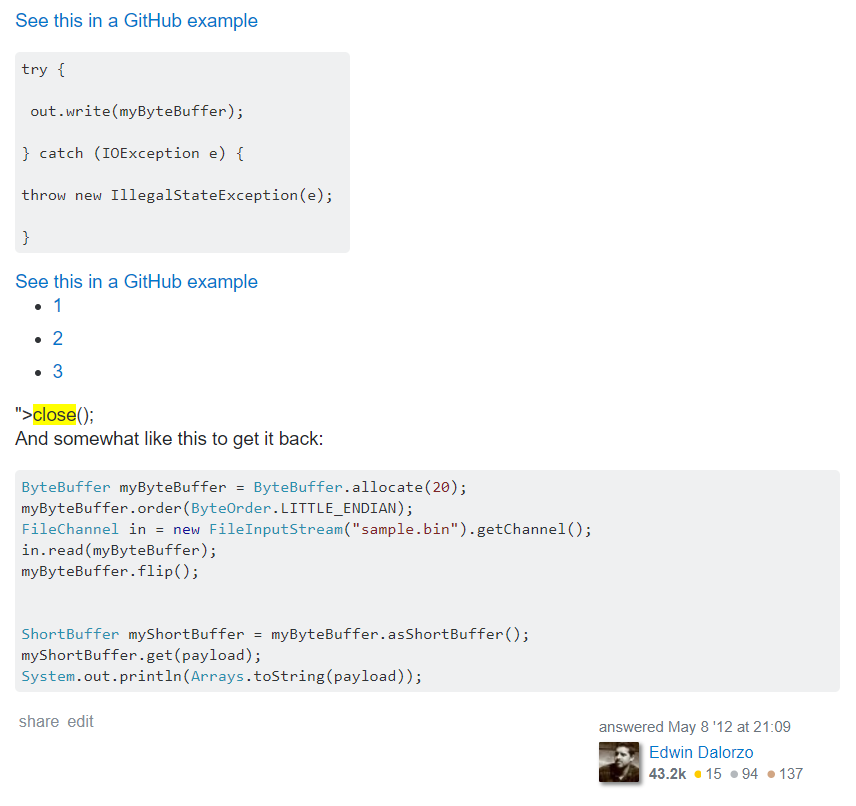
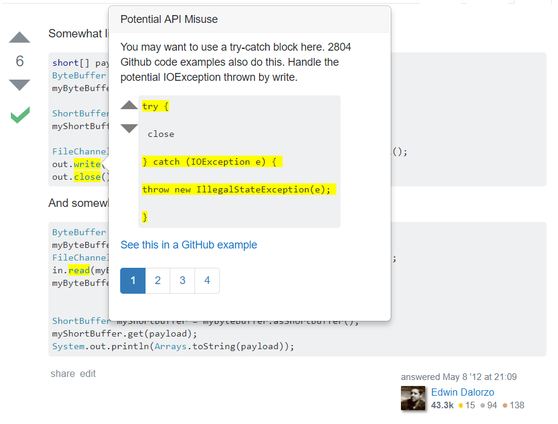
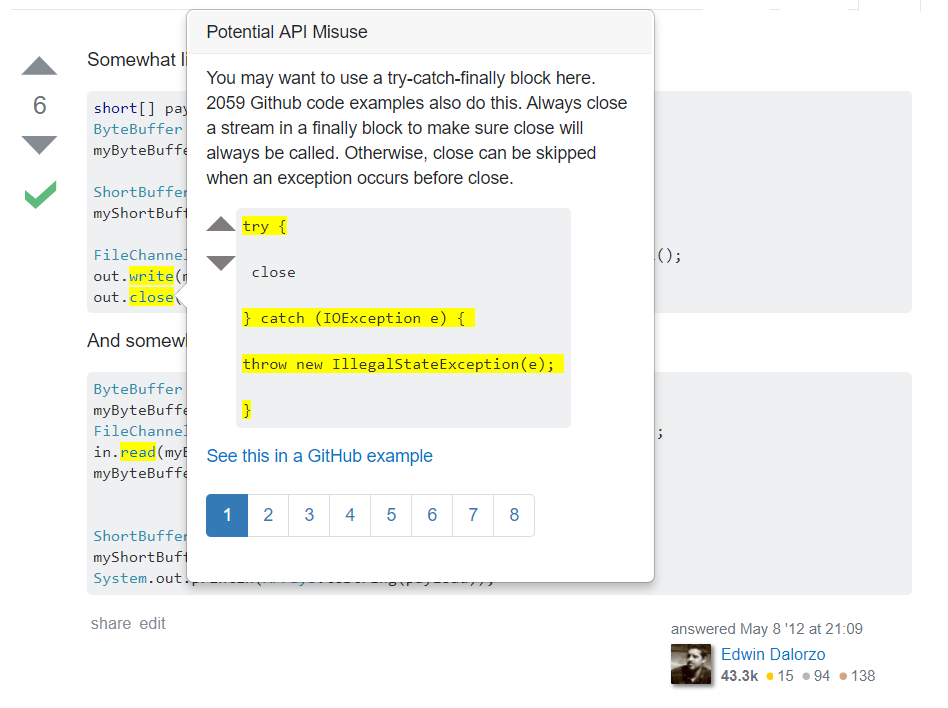

Week 8 (July 17 - July 21)
I feel like I accomplished a lot this week; Tianyi and I feel very close to finishing a good prototype of the UI. And, my JavaScript skills are already so much better than they were last week!
I got the popovers halfway modularized (I didn't include all of the violations for a given API call, just the first one that came up for each), but when I ran my code, I got a weird-looking bug:
 
As you can see, some of the popovers' HTML was being injected directly into the StackOverflow post. What confused me was that it was always random popovers; I might run the program three times and the first time it would look normal, the second time would have weird injections around one API call, and the third would have injections around a different API call. After some time debugging this (and printing just about every piece of code I had to the console), I finally determined that the search function I was using to find the API calls in the SO post was too broad -- it was picking up the API calls in popovers I had just generated and was attempting to generate popovers on them. Since Bootstrap popovers don't stack like that, it was breaking the SO post but not throwing any errors. The randomness of the injection was because I was generating my JSON message from the server from a HashMap, so the order of API calls that I would iterate through was different every time.
Tianyi and I brainstormed for awhile to try to determine a solution to this, and came up with two solutions. One option was to hold off on generating the popover content until I had highlighted and put empty popovers on all the API calls. The other, which we decided to implement, was based on the way SO formats its code examples: instead of nesting code examples simply between <code> tags, they "prettyprint" it by adding <span> tags that format the code based on the specific class given to the tag. E.g. instead of <code>out.close();<code>, this line would be formatted like so: <span class="pln">out</span> <span class="pun">.</span> <span class="pln">close</span> <span class="pun">();</span> I don't do this in my popover HTML, so a way to distinguish between "close" in the SO snippet and "close" in my popover content would be to search for a "close" that occurs within a <span> tag. Once I figured out the syntax for this, it was a relatively trivial solution.
Of course, there are always more bugs. Once this was fixed, we noticed that the extension was generating popovers on partially-matched API calls. For the post that I've been primarily working with for testing, the server would identify a violating API call, "get," and highlight a call named "getChannel." Obviously, I needed to make my search stricter. I changed my check for API calls contained within <span> tags of a certain class from just checking whether the term was contained to whether the term matched exactly the content of the tag.
Now that all of this was figured out, I needed to add all violations to the popovers, so that a single popover would have two or three pages of violations (instead of just doing the first one and hardcoding two empty pages). This turned out to be a non-trivial problem that Tianyi and I hadn't quite anticipated, but it worked out. I had to restructure how I was sending the JSON message from the server to the plugin: instead of having an array of violations that included the violation message, violating API call, SO post and snippet ids, etc., I had to generate the message from a HashMap<String, ArrayList<HashMap<String, Object>>>, which hurt a little because I had been proud of my elegant, inexpensive original solution. But, I had to scrap that to make the JSON message easier to parse on the plugin-side. Once I had linked all violations for one API call together, it was much easier to generate popovers.
Currently, the popovers look like this (with hard-coded examples for now):
 There are a lot more pages than there should be, which is a bug I discovered when I ran this. This is because our program parser in the server is not resolving types when it finds API calls, so calls like "write" and "close" that appear in many APIs will get all the violations concerning said APIs (since a FileChannel close, for example, is not following the required patterns of the close methods of other APIs). Tianyi is going to work on that since the parser is his domain; for now it doesn't really affect my work.
That's it for now. On Saturday Dr. Kim invited all the students in the lab to her house for dinner, and I wanted to share her selfie she took with us:

(clockwise from bottom: Dr. Kim, me, Siman (a new intern), Shagha (grad student), Alan (Dr. Kim's husband), Sophia (their daughter), Tianyi, and Gulzar (another of Dr. Kim's grad students).